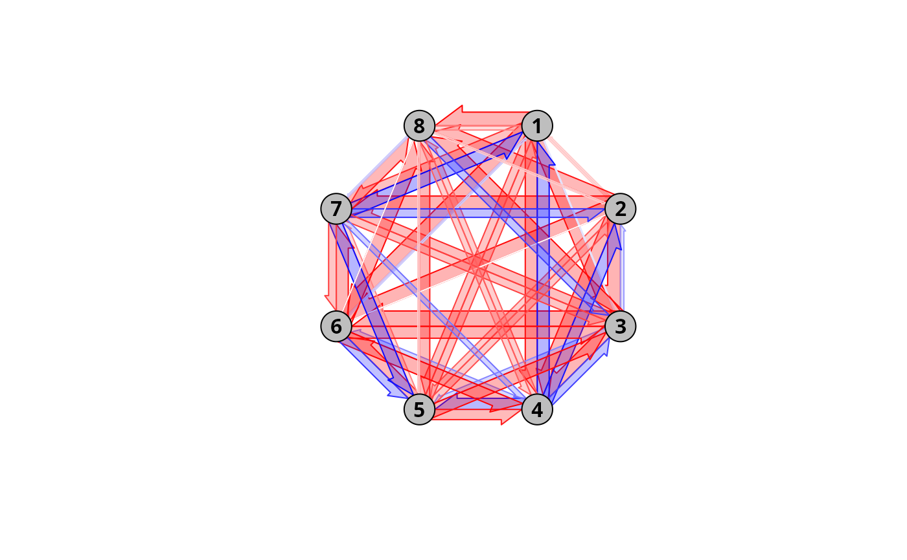
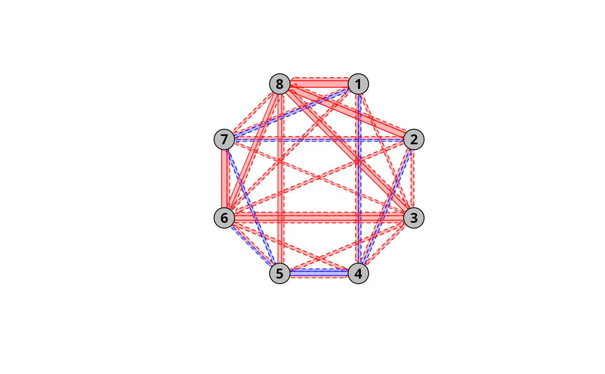
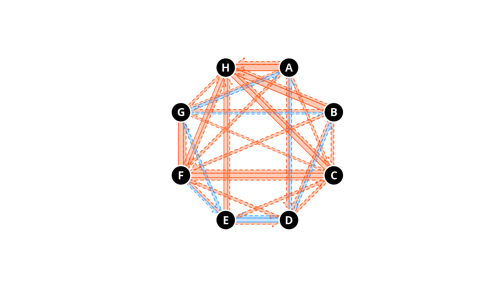
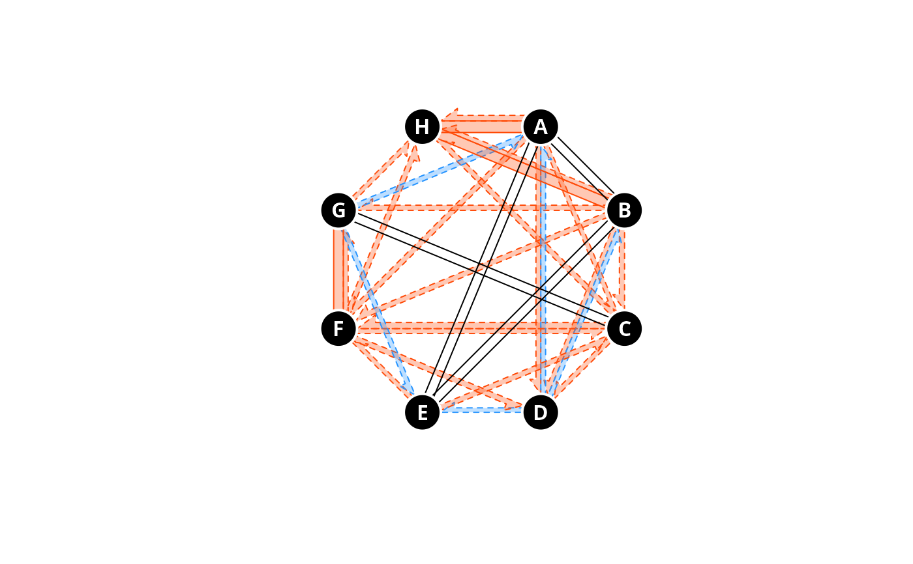

Summary plot for trajectory convergence and divergence
Source:R/trajectoryConvergencePlot.R
trajectoryConvergencePlot.RdProvides plots to represent trajectory convergence and divergence tests performed by the function trajectoryConvergence or to present the results of Relative Trajectory Movement Assessment (trajectoryRMA).
Usage
trajectoryConvergencePlot(
x,
type = "pairwise.asymmetric",
alpha.filter = NULL,
traj.colors = "grey",
traj.names = NULL,
traj.names.colors = "black",
...,
radius = 1,
conv.color = "red",
div.color = "blue",
half.arrows.size = 1,
tau.links.transp = 0.3,
top = "between",
pointy = FALSE,
add = TRUE
)Arguments
- x
An object of class
trajectories. Alternatively, an object of classRTMA.- type
A string indicating the convergence test to be displayed, either
"pairwise.asymmetric","pairwise.symmetric"or"both"(seetrajectoryConvergence). Disregarded ifinherits(x,"RTMA").- alpha.filter
The minimum p-value for a link to be drawn (see
trajectoryConvergence). Defaults toNULL(all links drawn). Disregarded ifinherits(x,"RTMA")(the RTMA corrected alpha level is used instead).- traj.colors
The colors for the trajectories (circles). Defaults to
"grey".- traj.names
The names of trajectories. Defaults to the names provided in
x.- traj.names.colors
The color of the names of trajectories on the circles. Defaults to
"black".- ...
Additional parameters passed to
polygonto personalize the circles representing trajectories.- radius
The radius of the circles representing trajectories. Defaults to
1.- conv.color
The color used to mark convergent trajectories. Defaults to
"red".- div.color
The color used to mark divergent trajectories. Defaults to
"blue".- half.arrows.size
A multiplication coefficient for the size of the arrow heads when representing asymmetric tests results. Defaults to
1.- tau.links.transp
The transparency of the links representing the tau statistic of the Mann-Kendall test (see
trajectoryConvergence).- top
A string indicating if the top of the plotting area should contain a circle representing a trajectory (
"circle"), or should be in between two circles ("between"). Defaults to"between".- pointy
Boolean. Should the circles representing trajectories be made pointy (i.e. pointing to the next trajectory)? Useful when trajectories have some order, as in the context of CETA to represent fixed date trajectories (see
trajectoryCyclical).- add
Passed to function
trajectoryConvergence. Flag to indicate that constant values should be added (local transformation) to correct triplets of distance values that do not fulfill the triangle inequality. Disregarded ifinherits(x,"RTMA").
Details
Function trajectoryConvergencePlot provides ways to visualize pairwise convergence and divergence between trajectories.
It has two modes of functioning:
If
xis of classtrajectories, the function will display the results of convergence/divergence tests by calls to functiontrajectoryConvergence.If
xis of classRTMA,the function will display the results of convergence/divergence tests and dynamic correspondence tests stored in theRTMAobject supplied.
In the plots, trajectories are represented by circles. The convergence or divergence between pairs of trajectories are represented by links. If convergence tests are symmetric, the links are simple. If the convergence tests are asymmetric, the links are displayed as half arrows pointing from the trajectory converging or diverging towards the trajectory being approached or diverged from.
The width and color hue of the links are proportional to the tau statistic of the Mann-Kendall test performed by the trajectoryConvergence function.
Function trajectoryConvergencePlot also offers the possibility to plot both tests at the same time.
If x is of class RTMA, trajectoryConvergencePlot will display both convergence tests as explained above, as well as cases of parallelism recognized in trajectoryRMA.
Parallel scenarios are indicated by two full parallel black lines linking two trajectories, while in case of Antiparallel scenarios one of the lines is dotted.
In addition, see function cycleShiftArrows for additional graphical elements to be displayed when conducting CETA.
References
Djeghri et al. (under review) Uncovering the relative movements of ecological trajectories.
Examples
data("avoca")
avoca_D_man <- vegclust::vegdiststruct(avoca_strat,
method ="manhattan",
transform = function(x){log(x+1)})
years <- c(1971, 1974, 1978, 1983, 1987, 1993, 1999, 2004, 2009)
avoca_times <- years[avoca_surveys]
avoca_x <- defineTrajectories(d = avoca_D_man,
sites = avoca_sites,
times = avoca_times)
#Raw output with asymmetric convergence test (default)
trajectoryConvergencePlot(avoca_x)

#More refined output with both type of tests and only plotting significant
#test results (p-value < 0.05)
trajectoryConvergencePlot(avoca_x,
type = "both",
alpha.filter = 0.05)

#Much more refined output with nicer colors, bigger half arrows,
#personalized trajectory names, controlling the size of circles representing
#trajectories and border customization.
trajectoryConvergencePlot(avoca_x,type = "both",alpha.filter = 0.05,
half.arrows.size = 1.5,
conv.color = "orangered",
div.color = "dodgerblue",
radius = 1.2,
traj.colors = "black",border = "white",lwd = 2,
traj.names = LETTERS[1:8],traj.names.colors = "white")

#RTMA version.
avoca_RTMA <- trajectoryRMA(avoca_x)
trajectoryConvergencePlot(avoca_RTMA,
half.arrows.size = 1.5,
conv.color = "orangered",
div.color = "dodgerblue",
radius = 1.2,
traj.colors = "black",border = "white",lwd = 2,
traj.names = LETTERS[1:8],traj.names.colors = "white")
